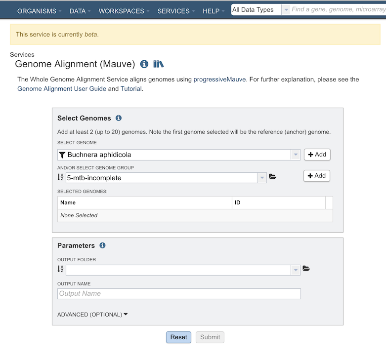
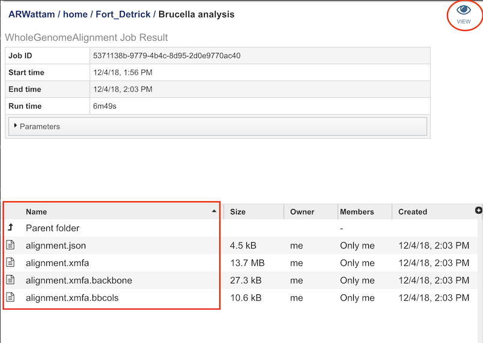
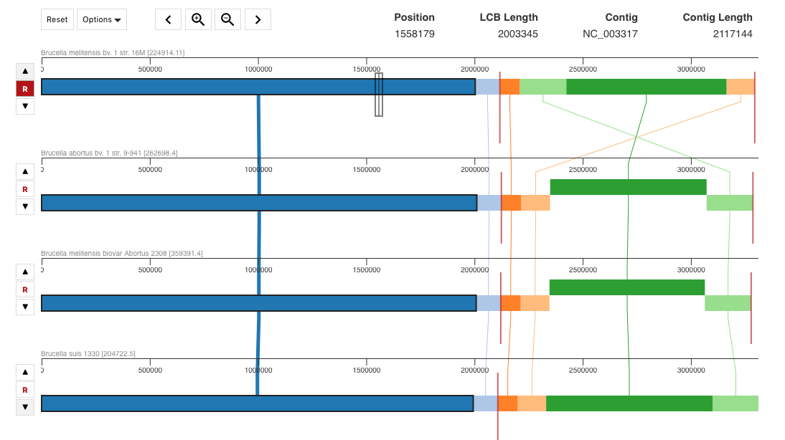

Genome Alignment Service¶
Revised: February 22, 2024
Overview¶
The bacterial Genome Alignment Service uses progressiveMauve to produce a whole genome alignment of two or more genomes. The resulting alignment can be visualized within the BV-BRC website, providing insight into homologous regions and changes due to DNA recombination. It should be noted that this service is currently released as beta. As always, we appreciate your feedback.
See also¶
Using the Genome Alignment Service¶
The Genome Alignment submenu option under the Services main menu (Genomics category) opens the Genome Alignment Service input form (shown below).

Options¶

Select Genomes¶
Specifies the genomes (at least 2) to have aligned.
Select Genome¶
Genomes for inclusion in the ingroup for the tree. Type or select a genome name from the genome list. Use the “+ Add” button to add to the Selected Genome Table.
And/Or Select Genome Group¶
Option for including a genome group from the workspace. Can be included with, or instead of, the Selected Genomes.
Parameters¶
Output Folder¶
The workspace folder where results will be placed.
Output Name¶
Name used to uniquely identify results.
Advanced Options¶
Manually set seed weight: The seed size parameter sets the minimum weight of the seed pattern used to generate local multiple alignments (matches) during the first pass of anchoring the alignment. When aligning divergent genomes or aligning more genomes simultaneously, lower seed weights may provide better sensitivity. However, because Mauve also requires the matching seeds must to be unique in each genome, setting this value too low will reduce sensitivity.
Weight: Minimum pairwise LCB score, refers to the minimum score for Locally Collinear Blocks (LCBs) to be considered in the alignment. The LCB weight sets the minimum number of matching nucleotides identified in a collinear region for that region to be considered true homology versus random similarity. Mauve uses an algorithm called greedy breakpoint elimination to compute a set of Locally Collinear Blocks (LCBs) that have the given minimum weight. By default an LCB weight of 3 times the seed size will be used. The default value is often too low, however, and this value should be set manually.
Output Results¶

The Genome Alignment Service generates files that are deposited in the Private Workspace in the designated Output Folder. These include
alignment.xmfa - The Mauve alignment file.
alignment.json - The LCB coordinates in JSON format.
Clicking on “VIEW” at the top right of this page will bring will allow you to visualize the genome alignment:

References
Darling AE, Mau B, Perna NT (2010) progressiveMauve: Multiple Genome Alignment with Gene Gain, Loss and Rearrangement. PLOS ONE 5(6): e11147. https://doi.org/10.1371/journal.pone.0011147
http://darlinglab.org/mauve/user-guide/